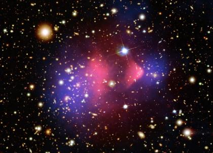
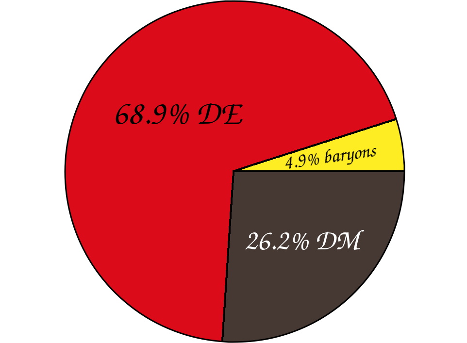
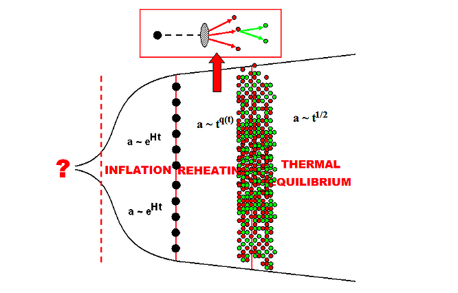

$x^2$
$$\begin{eqnarray}
x =& y \\
x =& 2y
\end{eqnarray}$$
$$ \begin{equation} x=2 \end{equation} $$
| This | is |
BeginPackage["YourPackage`"]
(* Public symbols usage *)
Get["`OptionsValidation`"]
Begin["`Private`"]
(* Implementation *)
End[]
EndPackage[]
Unprecedented precision measurements of Cosmic Microwave Background (CMB) temperature and polarization anisotropies from the Planck satellite, together with Type Ia Supernovae(SNeIa) luminosity distance measurements, and measurements of the clustering of the large-scale structure (LSS) of our Universe from a number of galaxy redshift surveys, have provided a remarkably accurate description of the Universe. The combination of these measurements points towards the so-called concordance ΛCDM model, describing a spatially flat Universe where most of the energy content takes the form of two dark components: Dark Matter and Dark Energy. The first represents about 25% of the total energy budget of the Universe, while visible matter (baryons) accounts for 5%. The remaining∼70% of the total energy is associated to a mysterious component, which does not behave like matter and is commonly referred to as dark energy. The Dark Energy component is responsible for the current accelerated expansion of the Universe, and thus constitutes a fundamental key towards understanding the fate of the latter. Yet, its nature and gravitational properties remain largely unknown. Relaxing the hypothesis that it is due to a cosmological constant, or in other words letting the Dark Energy contribution to the Universe budget evolve with time, could alleviate the required fine-tuning. A wide variety of Dark Energy models alternative to the cosmological constant, featuring either new fundamental particles and fields or modifications to the gravitational sector, have been proposed by members of the SOM group.
Recent work concerning dark energy and its properties can found in references:
Dark matter is one of the most interesting open problems in Cosmology and Particle Physics, pointing towards the existence of new elementary particles and theories beyond the Standard Model of Particle Physics. Unlike baryonic matter, dark matter does not absorb, emit or reflect light (it is dark), and its existence is inferred through gravitational effects on baryonic matter, with plenty of evidence arising from different sources. The flatness of the rotational curves of galaxies requires a significant dark matter component to account for the inferred dynamical galactic mass, whereas the temperature and polarization anisotropies of the Cosmic Microwave Background (CMB) radiation indicate a dark matter component that accounts for about 27% of the present energy balance in the Universe. On the scale of the galaxy clusters, the Bullet Cluster provides one of the most convincing evidence for the existence of dark matter, clearly showing the separation between non-luminous and baryonic matter. Over the past few years, researchers have come up with different theoretical models to describe dark matter and have proposed several experiments to direct and indirectly detect any dark matter candidates, but so far, the origin and nature of dark matter remain unknown. Hence, the goal of SOM members is to continue to elaborate models to understand dark matter, taking into account new data and constraints, in order to shed light on the dark side of the Universe.
Fig: Bullet cluster, probing the distribution of Dark Matter
Fig: Cosmposition of the universe: Dark Energy (DE), Dark Matter (DM)
| Fig: Bullet cluster, probing the distribution of Dark Matter | Fig: Cosmposition of the universe: Dark Energy (DE), Dark Matter (DM) |
The appearance of the first generation of galaxies, when the universe was a few hundred million years old, lead to the end of the so-called dark ages of the universe. The ultraviolet (UV) photons emitted in these galaxies, gradually ionized the neutral hydrogen in a process known as reionization. Awaiting future cosmological measurements of the 21 cm transition line, it is important to exploit our current knowledge of the evolution of the total ionized fraction at late times to tests the Dark Matter properties. 21 cm cosmology aims to measure accurately the Epoch of Reionization (EoR) through the 21 cm neutral hydrogen hyperfine transition to trace the baryon overdensities in the z > 6 redshift range. Current 21 cm radio interferometers aim to measure the power-spectrum measurements of the 21 cm signal. Next decade, high-redshift 21 cm experiments include SKA (Square Kilometre Array) and HERA (Hydrogen Epoch of Reionization Array). 21 cm cosmology is an emerging field and one of the foremost objectives of this proposal is to exploit these future measurements to improve the present cosmological constraints on Dark Matter. The SOM member Olga Mena of this proposal is a member of the SKA science team, and she is deeply involved in the Spanish participation in this experiment.
Please see references below:
A thermal neutrino relic component in the universe modifies both the expansion history and the growth of structure, having a cosmological impact on: a) the big bang nucleosynthesis epoch through its effect on the expansion rate, measurements of the primordial abundance of light elements can constrain Neff (the effective number of neutrino species); b) the epoch of the matter-radiation equality, leaving an imprint on the CMB anisotropies; c) in the recent universe, after neutrinos become non-relativistic, they suppress the growth of matter density fluctuations and galaxy clustering.
Members of the SOM group were part of the BOSS galaxy survey and has led in the past some of the analyses of the neutrino mass constraints from this galaxy survey, combining its measurements with a number of other cosmological data sets, leading to the most constraining bounds on the neutrino masses and other cosmic relic (e.g. axions) properties. Our goals are to continue improving the cosmological bounds on neutrino properties, as new data becomes available, and to combine such constraints with neutrino oscillation data that will help to identify the underlying dynamics responsible for neutrino masses. Special attention will be devoted to the issue of the neutrino mass hierarchy (normal versus inverted), combining with future bounds from the long baseline DUNE (Deep Underground Neutrino Experiment) experiment. The optimization of future galaxy surveys is also crucial for extracting the neutrino mass from cosmological observations.
Our recent work on neutrino cosmology can be found in the references below
The inflationary paradigm successfully explains the flatness problem, the horizon problem and the origin of the perturbations which seeded the structures that we observe today in our universe. The smoking-gun of inflation will be the detection of a stochastic background of gravitational waves. Such primordial signature is characterized by its amplitude, parametrized via the tensor-to-scalar ratio r. The 2018 analyses from the Planck CMB data release have presented the tightest bounds to date on r using temperature and polarization measurements. Albeit current Planck constraints are perfectly compatible with a vanishing tensor-to-scalar ratio, yet there is still enough room for many theoretical possibilities.
See e.g. https://arxiv.org/abs/1802.04290
In the early universe there are also various phenomena characterised by non-perturbative collective field interactions, such as post-inflationary (p)reheating and strong first-order phase transitions. Soon after the end of inflation, the field responsible for cosmic inflation – the inflaton – is typically expected to be in the form of a homogeneous condensate oscillating around the minimum of its potential. Each time the inflaton crosses zero, particle species sufficiently strongly coupled to the inflaton, are created in energetic bursts. For bosonic species this leads to an exponential growth of the energy transfer within few oscillations of the inflaton. Such particle production phenomenon corresponds to a non-perturbative effect, which cannot be captured by perturbative coupling expansions, not even if the couplings involved are small. In the case of strong first-order phase transitions (after the completion of reheating), the situation is similar as the dynamics can only be captured on a lattice: no analytical or perturbative technique will allow us to describe properly the 3-dimensional spatial field profiles emerging of the symmetry breaking field involved in the phase transitions (nor of the fields/plasma coupled to such field), unless we simulate numerically the non-linear interactions. See lattice field theories for further clarification.

Furthermore, both preheating and first-order phase transitions create gravitational waves (GWs). GW astronomy has emerged as an exciting new field, triggered by the detection of GWs by the LIGO/Virgo network. So far, GW experiments have impacted astrophysics, and provided new tests of gravity, but it is clear that they also offer unprecedented opportunities for breakthroughs in High Energy Physics (HEP) and Early Universe Cosmology. The connection between HEP and GWs represents an interdisciplinary emerging field, with the potential to address major puzzles in fundamental physics, e.g. the state of the Early Universe during inflation and just afterwards, the origin of the baryon asymmetry of the Universe (BAU), or the nature of dark matter. Furthermore, the prospect of a GW experimental program spanning across different frequencies is emerging, and hence, dedicated studies on the complementarity and cross-connection among different detectors, optimizing new physics searches, are pivotal for a coordinated planning of GW observations. For example, in a very strong first-order phase transition around the EW scale (let it be the EW symmetry breaking in beyond SM scenarios or simply a transition in a dark sector), the GW background produced is expected to fall in the observational window of the will-be first space-based GW detector, LISA, expected to start operating in the middle 2030’s. This will allow us to test particle physics theories with GWs, in a completely independent and orthogonal manner to particle colliders.
Selected works on early Universe by SOM members: